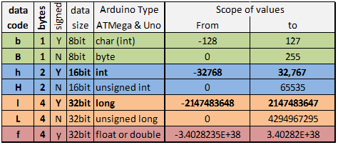
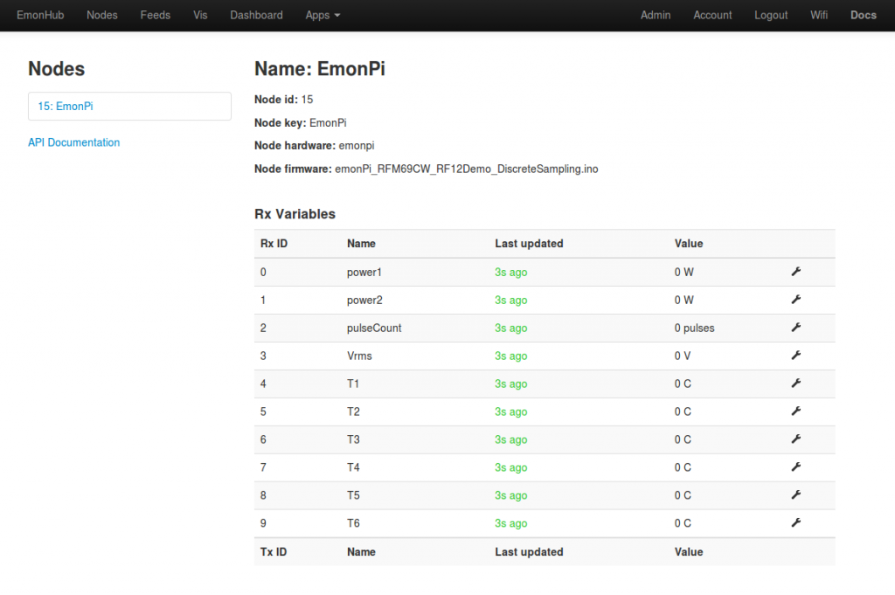

Is it possible to post long values instead of int values?
My Power meter provides kWh with three digits which gives me 7 digits in total ex. (4858.002). If I multiple it by 1000 this is 4858002 which is too big for an int (32768) or even an unsigned int (65535). When I post a long value to the emonHub via the RF12 if is corrupted, is this solvable?
Alternative is to post two int values and do some magic tricks in emonCMS?
Re: Post long values
Are you using emoncms.org or your own emoncms? If your own emoncms, see http://openenergymonitor.org/emon/node/5289
Re: Post long values
I'm using emoncms.org but might change it to my own. Your proposed solution looks pretty complex, I'll park it for now.
Re: Post long values
You could look at the "Node" input in emonCMS. It is an alternative to the "Input" page, but I found that the editing options were quite restricted once I has created the input (I could not delete it, nor extend it to more variables, nor in fact do anything other than rename it, add or change the units and switch between int and ulong variable type.
Re: Post long values
The topic of "datacodes" and how it works can be quite complex, but what it basically boils down to is that if you are using emonhub you can define your own data payload in emonhub.conf to overrule the default standard of "byte-pair integers".
If you look at the bottom of your emonhub.conf there is an example template using (an out of scope) node id of 99,
The "datacodes" need to match the sketches typedef struct using the letters in this table
by default emonhub assumes incoming data is a unknown number of 'h' (signed ints). If you wanted to define for example node 10 as 5x signed ints you would have "datacodes = h, h, h, h, h" however if if fact the last 4 bytes were actually 1x unsigned long rather than 2x signed ints you would define "datacodes = h, h, h, L"
at the bottom of emonhub.conf in the [nodes] section you would have
[[10]]
datacodes = h, h, h, L
node id and one line, so once you know your required format it's very easy, the complexity is mainly due to conveying the info needed to understand all flexibility and options. If you just want to "decode" a particular payload, tell us what format that is and we can tell you what you need in that one line.
I do intend to make a tool that does exactly that soon. A webpage that you can select your payload either by sketch name or by defining the typedef struct variables and that will give you a "datacodes" string for emonhub and if you need it a typedef struct to cut and paste into a sketch.
Paul
Re: Post long values
That's it! I changed the datacodes to L (unsigned long) to accommodate for a value that could reach in ten-thousands but still includes three digits.
I'll monitor for the coming days to see how the data is captured.
Re: Post long values
Finally found Paul B's post describing the valid values for EmonHub datacodes, posted on 29/12/2014. Could this table be added to the EmonPi setup guide? Most of the other node keywords are reasonably understandable as they stand. Still looking whether anything needs to be added to the interfacer section to accept data from an HTTP call. I am trying to add data derived from micro inverters. I have code to decrypt and format the data into a number of nodes each with several fields , but wish to add to the Emoncms database.
Any help appreciated
Paul G.
Re: Post long values
Node module was deprecated recently.
Re: Post long values
Hi Paul, Your right that table does need to be in a more prominent position, The datacodes are primarily to decode data from the rfm network, that's not to say they cannot be used elsewhere but the decoding obviously needs to match the encoding to work.
You should start a new thread for your topic and supply some more detail, what is making the call?, what is the data and format?
@ chaveiro - The node module was depreciated recently but it has returned in a different form on the emonPi (and therefore the 'latest' SDcard image) replacing the input module completely in the 'low-write v8.5' .
Image below is from the emonPi /emonBase setup guide
Paul

Re: Post long values
pb66 see http://openenergymonitor.org/emon/node/10934